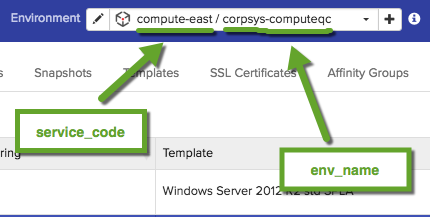

Getting Started
Welcome to cloud.ca’s API documentation.
The cloud.ca API allows you to manage your configuration as well as provision and manage your resources in a simple programmatic way using standard HTTP requests.
This API is following the REST approach. All requests should be made over SSL. Request and Response bodies, including errors, are encoded in JSON.
Authentication
To authenticate, use this code:
curl "api_endpoint_here"
-H "MC-Api-Key: [your-api-key]"
Make sure to replace
[your-api-key]with your API key.
Authentication is done via the API Key which you can find in the API Keys section in the cloud.ca portal under the user profile menu. If you don’t see cloud.ca API section, it means your user account doesn’t have the required API keys for cloud.ca permission.
cloud.ca expects for the API key to be included in all API requests to the server in a header that looks like the following:
MC-Api-Key: [your-api-key]
Authorization
All cloud.ca API calls go through the same RBAC (Role-based Access Control) logic that is enforced when performing the equivalent operation from the cloud.ca portal. Your user account associated with the provided API key need to be assigned the required permission(s) via your system and/or environment roles in order to be authorized to execute the various API calls. If you lack the required permission, the API call will fail and return an error message indicating what went wrong.
Requests
The cloud.ca API can be used by any tool that is fluent in HTTP. The appropriate HTTP method should be used depending on the desired action.
| Method | Purpose |
|---|---|
| GET | Used to retrieve information about a resource. |
| PUT | Used to create (or provision) a new resource. |
| POST | Used to update a resource or perform an operation on it. |
| DELETE | Used to remove/delete a resource. |
POST and PUT requests must have a JSON encoded body and the Content-Type: application/json header.
Pagination & Sorting
curl -X GET "https://api.cloud.ca:443/v1/users;orderby=tenant,userName" \
-H "MC-Api-Key: [your-api-key]"
curl -X GET "https://api.cloud.ca:443/v1/users;orderby=lastLogin%20DESC" \
-H "MC-Current-Page: 1" \
-H "MC-Page-Size: 10" \
-H "MC-Api-Key: [your-api-key]"\
Configuration APIs
All GET endpoints returning a list of objects support pagination. The desired “window” of result is specified by providing the following HTTP request headers:
| HTTP request header | Description |
|---|---|
| MC-Current-Page | The page of data to retrieve |
| MC-Page-Size | The number of items to display per page |
To control sorting when retrieve a list of configuration items, you can also add the orderby path parameter to specified the field(s) to be used for sorting, along with the desired sorting order (ASC or DESC).
Responses
A successful request to return a single ressource will look like this:
{
"data": {
"_comment" : " JSON representation of resource goes here"
}
}
A successful request to return a collection of resource will look like this:
{
"data": [
{ "_comment" : "JSON representation of first resource goes here" },
{ "_comment" : "JSON representation of second resource goes here" }
],
"metadata": {
"pageSize": 2,
"pageCurrent": 1,
"recordCount": 4,
"sortField": "templateName",
"sortOrder": "ASC"
}
}
An unsuccessful request will look like this:
{
"taskId": "d59b760c-dfa9-449f-be81-0f9efcf2946c",
"taskStatus": "FAILED",
"errors": [
{
"code": 2012,
"message": "Cannot stop an instance that isn't in the running state",
"context": {
"id": "4534cc36-bc46-48bc-ac5c-3ee4e42f0a44",
"currentState": "Stopped",
"expectedStates": [
"Running"
],
"type": "instances"
}
}
]
}
When an API request is issued, the response body will be formatted in the same standard JSON structure (see detailed JSON Schema of the response in the sidebar), although some of the object and attributes may or may not be included depending on the context.
The returned HTTP Status will be one of the following codes:
| Status code | Reason |
|---|---|
| 200 | The request was successful. |
| 400 | Bad request – Occurs when invalid parameters are provided or when quota limit is exceeded. |
| 404 | Forbidden – You are not authorized to perform this request. |
| 404 | Not Found – Cannot locate the specified resource. |
| 500 | An unexpected error occured. |
Asynchronous operations
Some operations take longer to execute, and to avoid blocking on the response until it is fully completed, these are treated in an asynchronous fashion. This means the API will return immediately, and provide you a taskId that is your reference to the ongoing background task. Using the Tasks API, you can query the task’s status to find if it has completed and obtain the result of the operation.
The operations that are affected by this are identified as such with a (async) suffix in this documentation.
Core Resources
The following sections describe the various endpoints exposed by cloud.ca to manage customer’s configuration and interact with various core functionality of the system. Using these, you can automate various workflows without having to log into the portal, or simply integrate differents aspects of cloud.ca with your own toolchain.
Environments
Users
Tasks
Get task status
A response for an asynchronous operation will look like this:
{
"taskId": "668abbfd-d5f2-45d4-95a3-28aef4b671f5",
"taskStatus": "PENDING"
}
To verify if the operation is completed:
curl "https://api.cloud.ca:443/v1/tasks/668abbfd-d5f2-45d4-95a3-28aef4b671f5" \
-H "MC-Api-Key: [your-api-key]"
The response when the task is completed (if creating a new resource, a representation of the resource would also be included):
{
"data": {
"id": "668abbfd-d5f2-45d4-95a3-28aef4b671f5",
"status": "SUCCESS",
"created": "2016-07-11T16:25:15.227-04:00"
}
}
This endpoint retrieves information about an asynchronous task
HTTP Request
GET https://api.cloud.ca:443/v1/tasks/{id}
Parameters
| Parameter | Type | Required | Description |
|---|---|---|---|
| id | path | true | Id for the task to find. |
Usage
Compute Service
Although CloudStack provides its own native API, you may find it more convenient to use cloud.ca’s wrapper for it, as it arguably simpler to use and provide a consistent way of calling all its supported services. Furthermore, it enforces the same environment role-based access control that is defined in the cloud.ca portal.
All compute service API calls must include path parameters service_code and env_name, which are used to specify which environment is targeted by your request. This information can be retrieved from the Environment picker in the Services tab, as seen below.

Instances
Instance resource
Example of an instance resource:
{
"zoneId": "04afdbd1-e32d-4999-86d0-96703736dded",
"templateId": "8f52a74e-e637-40e8-a8dc-f56fd0b71ab9",
"templateName": "CentOS 7 HVM base (64bit)",
"computeOfferingId": "3caab5ed-b5a2-4d8a-82e4-51c46168ee6c",
"zoneName": "QC-1",
"computeOfferingName": "1vCPU.512MB",
"networkId": "d5a68379-a9ee-404f-9492-a1964b374d6f",
"networkName": "Web-Testing",
"vpcId": "9eb1592c-f92f-4ddd-9799-b58caf896328",
"vpcName": "Testing-VPC",
"ipAddress": "10.164.212.68",
"projectId": "a295c6de-1737-4df2-aa49-9bd749fa2489",
"isPasswordEnabled": true,
"macAddress": "02:00:2b:67:00:30",
"cpuCount": 1,
"memoryInMB": 512,
"hostname": "backup-test",
"username": "cca-user",
"affinityGroupIds": [],
"id": "9db8ff2f-b49b-466d-a2f3-c1e6def408f4",
"name": "backup-test",
"state": "Running"
}
Generic instance information
| Fields | Description |
|---|---|
idUUID |
Instance ID |
namestring, required |
Instance’s display name |
state>string |
The current state of the instance. |
templateIdUUID, required |
Instance’s template ID |
templateNamestring |
Name of associated template |
computeOfferingIdUUID, required |
Instance’s Compute Offering ID |
computeOfferingNamestring |
Name of associated Compute Offering |
cpuCountinteger |
Number of vCPUs associated with the instance’s Compute Offering. |
memoryInMBinteger |
Number of megabytes associated with the instance’s Compute Offering. |
networkIdUUID, required |
ID of Network where instance is deployed |
networkNamestring |
Name of associated Network |
hostNamestring |
Instance’s host name |
userNamestring |
The username that can be used to connect to the instance |
affinityGroupIdsarray |
ID(s) of the Affinity Groups to which the instance is associated. |
zoneIdUUID |
ID of zone where instance is deployed |
zoneNamestring |
Name of associated Zone |
vpcIdUUID |
Instance’s VPC ID |
vpcNamestring |
Name of associated VPC |
ipAddressstring |
The instance’s private IPv4 address |
projectIdUUID |
Instance’s CloudStack project ID |
isPasswordEnabledboolean |
Indicate whether a password can be used for remote connections |
macAddressstring |
The instance’s MAC address |
Get list of instances
curl -X GET "https://api.cloud.ca:443/v1/services/compute-east/demo-env/instances"
-H "MC-Api-Key: [your-api-key]"
The above command returns JSON structured like this:
{
"data": [
{
"zoneId": "04afdbd1-e32d-4999-86d0-96703736dded",
"templateId": "8f52a74e-e637-40e8-a8dc-f56fd0b71ab9",
"templateName": "CentOS 7 HVM base (64bit)",
"computeOfferingId": "3caab5ed-b5a2-4d8a-82e4-51c46168ee6c",
"zoneName": "QC-1",
"computeOfferingName": "1vCPU.512MB",
"networkId": "d5a68379-a9ee-404f-9492-a1964b374d6f",
"networkName": "Web-Testing",
"vpcId": "9eb1592c-f92f-4ddd-9799-b58caf896328",
"vpcName": "Testing-VPC",
"ipAddress": "10.164.212.68",
"projectId": "a295c6de-1737-4df2-aa49-9bd749fa2489",
"isPasswordEnabled": true,
"macAddress": "02:00:2b:67:00:30",
"cpuCount": 1,
"memoryInMB": 512,
"hostname": "backup-test",
"username": "cca-user",
"affinityGroupIds": [],
"id": "9db8ff2f-b49b-466d-a2f3-c1e6def408f4",
"name": "backup-test",
"state": "Running"
},
{
"zoneId": "04afdbd1-e32d-4999-86d0-96703736dded",
"templateId": "b6b0506a-4454-4f93-951c-8c9d220a466c",
"templateName": "CentOS 6.6 base (64bit)",
"computeOfferingId": "3caab5ed-b5a2-4d8a-82e4-51c46168ee6c",
"zoneName": "QC-1",
"computeOfferingName": "1vCPU.512MB",
"networkId": "d5a68379-a9ee-404f-9492-a1964b374d6f",
"networkName": "Web-Testing",
"vpcId": "9eb1592c-f92f-4ddd-9799-b58caf896328",
"vpcName": "Testing-VPC",
"ipAddress": "10.164.212.56",
"projectId": "a295c6de-1737-4df2-aa49-9bd749fa2489",
"isPasswordEnabled": true,
"macAddress": "02:00:6b:c5:00:2e",
"cpuCount": 1,
"memoryInMB": 512,
"hostname": "i-john-664",
"username": "cca-user",
"affinityGroupIds": [],
"id": "06f969bf-5893-4548-860e-14416e70c16d",
"name": "i-john-664",
"state": "Stopped"
}
],
"metadata": {
"recordCount": 2
}
}
This endpoint retrieves all instances in a given environment.
HTTP Request
GET https://api.cloud.ca:443/v1/services/{service_code}/{env_name}/instances
Parameters
| Parameter | Type | Required | Description |
|---|---|---|---|
| service_code | path | true | Service code of an environment. |
| env_name | path | true | Environment name. |
| org_id | query | false | Organization id (not required if environment is in your own organization). |
| sort_by | query | false | Name of field to sort on. |
| sort_order | query | false | Sort order ASC or DESC |
| page_number | query | false | The page number to retrieve |
| page_size | query | false | Number of items per page |
Add new instance (async)
Here is the absolute minimum information required to create a new instance:
curl -X POST -H "Content-Type: application/json" -H "MC-Api-Key: [your-api-key]" -d "{
\"name\" : \"myInstance2\",
\"templateId\" : \"15601ee5-3db8-4021-9872-e5248a7f885a\",
\"computeOfferingId\": \"e213fb17-ab2e-45ff-9679-e30f905f35a2\",
\"networkId\" : \"d5a68379-a9ee-404f-9492-a1964b374d6f\"
}" "https://api.cloud.ca:443/v1/services/compute-east/testing/instances"
The above command returns JSON structured like this:
{
"taskId": "b2f82e2a-123e-4f86-a4c7-dc9b850dd11e",
"taskStatus": "PENDING"
}
After querying the Tasks endpoint with above
taskID, a successful execution will return a result like this:
{
"data":{
"id":"b2f82e2a-123e-4f86-a4c7-dc9b850dd11e",
"status":"SUCCESS",
"created":"2016-07-12T09:37:34.955-04:00",
"result":{
"cpuCount":1,
"memoryInMB":1024,
"affinityGroupIds":[
],
"networkId":"d5a68379-a9ee-404f-9492-a1964b374d6f",
"state":"Running",
"hostname":"myInstance",
"isPasswordEnabled":true,
"projectId":"a295c6de-1737-4df2-aa49-9bd749fa2489",
"macAddress":"02:00:01:16:00:33",
"type":"CloudStack",
"password":"fJub6i",
"zoneName":"QC-1",
"zoneId":"04afdbd1-e32d-4999-86d0-96703736dded",
"id":"5bf7352c-eed2-43dc-83f1-89917fb893ca",
"templateId":"15601ee5-3db8-4021-9872-e5248a7f885a",
"computeOfferingId":"e213fb17-ab2e-45ff-9679-e30f905f35a2",
"computeOfferingName":"1vCPU.1GB",
"name":"myInstance",
"networkName":"Web-Testing",
"templateName":"CentOS 7.2 HVM base (64bit)",
"ipAddress":"10.164.212.242"
}
}
}
This endpoint create a new instances in a given environment.
HTTP Request
POST https://api.cloud.ca:443/v1/services/{service_code}/{env_name}/instances
Parameters
| Parameter | Type | Required | Description |
|---|---|---|---|
| service_code | path | true | Service code of an environment. |
| env_name | path | true | Environment name. |
| org_id | query | false | Organization id (not required if environment is in your own organization). |
| instance | body | true | The JSON-formatted instance resource to be created |
Delete an instance (async)
curl -X DELETE "https://api.cloud.ca:443/v1/services/compute-east/demo-env/instances/5bf7352c-eed2-43dc-83f1-89917fb893ca" \
-H "MC-Api-Key: [your-api-key]"
The above command returns JSON structured like this:
{
"taskId":"07be5466-dd81-4965-929e-e72cfa35046f",
"taskStatus":"PENDING"
}
Schema for
cleanup_optionsparameter:
{
"purgeImmediately":true,
"publicIpIdsToRelease":[
"string"
],
"volumeIdsToDelete":[
"string"
],
"deleteSnapshots":true
}
This endpoint deletes an instance. The instance needs to be in running, stopped or error state for the operation to work.
HTTP Request
DELETE https://api.cloud.ca:443/v1/services/{service_code}/{env_name}/instances/{id}
Parameters
| Parameter | Type | Required | Description |
|---|---|---|---|
| service_code | path | true | Service code of an environment. |
| env_name | path | true | Environment name. |
| id | path | true | Id of instance. |
| org_id | query | false | Organization id (not required if environment is in your own organization). |
| cleanup_options | body | false | JSON-formatted cleanup options |